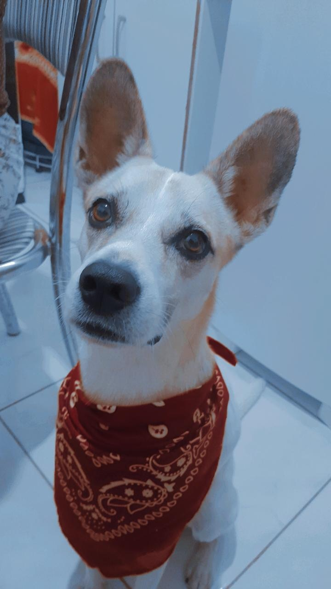

Essa foto do lado esquerdo, sou eu: Eduardo Lima, nasci em Santa Barbara bahia e com menos de um ano de idade fui morar em Salvador, 16 anos depois voltei a morar na cidade onde nasci mas pretendo voltar para Salvador por questões de gostar mais de la e principalmente por questões de estudos e trabalho. Atualmente, faço Senai a noite e trabalho durante o dia.
A foto do lado direito é uma bandeira de meu time favorito e do coração aquele que acompanho muito e assisto todos os jogos.
Algumas caracteristicas sobre mim:
E por fim, este é o meu filme favorito onde acompanho sempre os lançamentos e que sempre que passa em algum lugar ou que esteja disponivel reassisto
|  | Esse é meu cachorrinho chamado Nick, ele tem mais ou menos 2 anos e eu encontrei ele na rua logo logo quando me mudei. Foi achado comm diversas marcas de maus tratos... e hoje temos ele como um integrante da família que traz muito amor e alegria. |
Contatos: